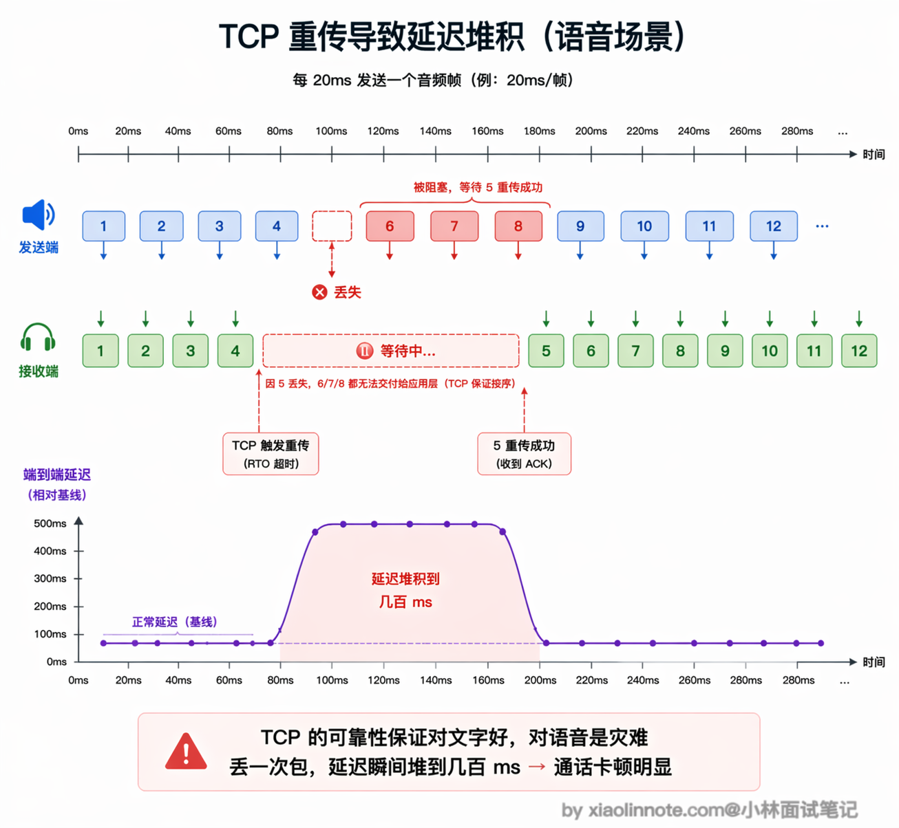
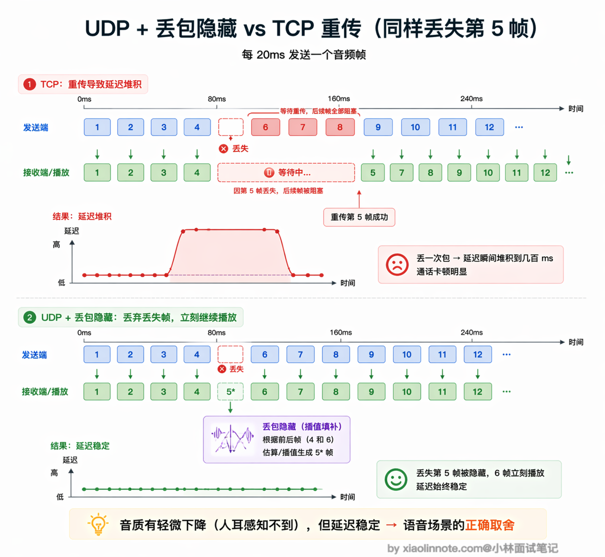
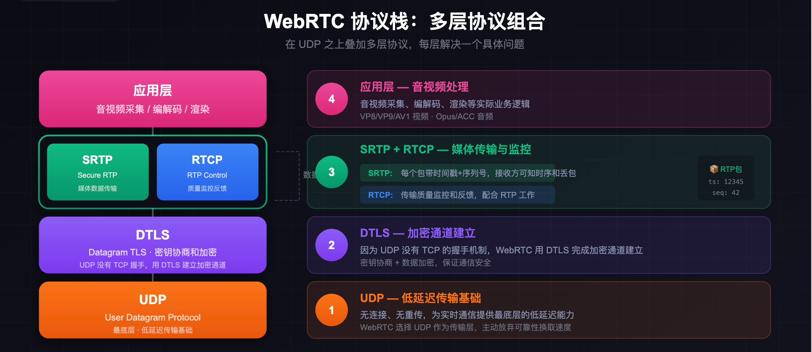
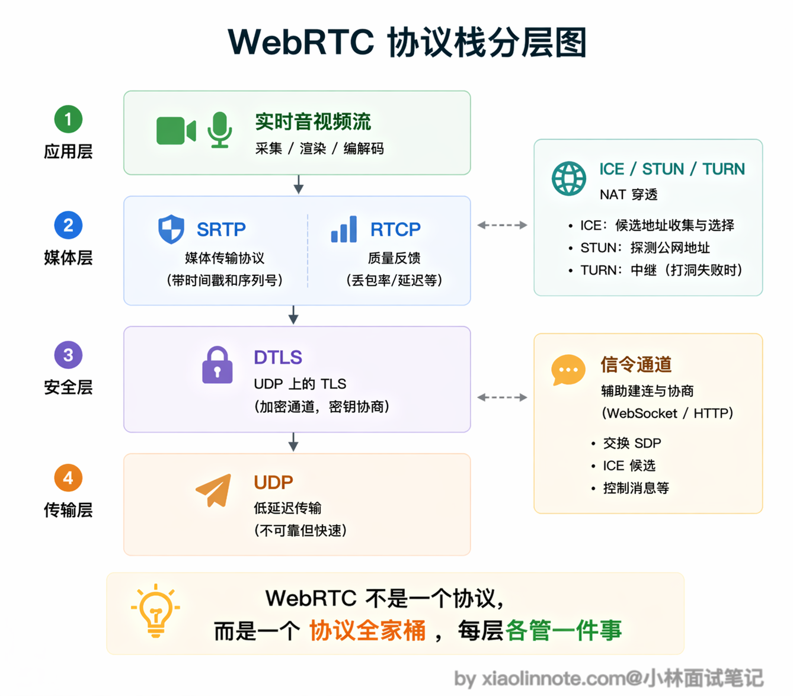
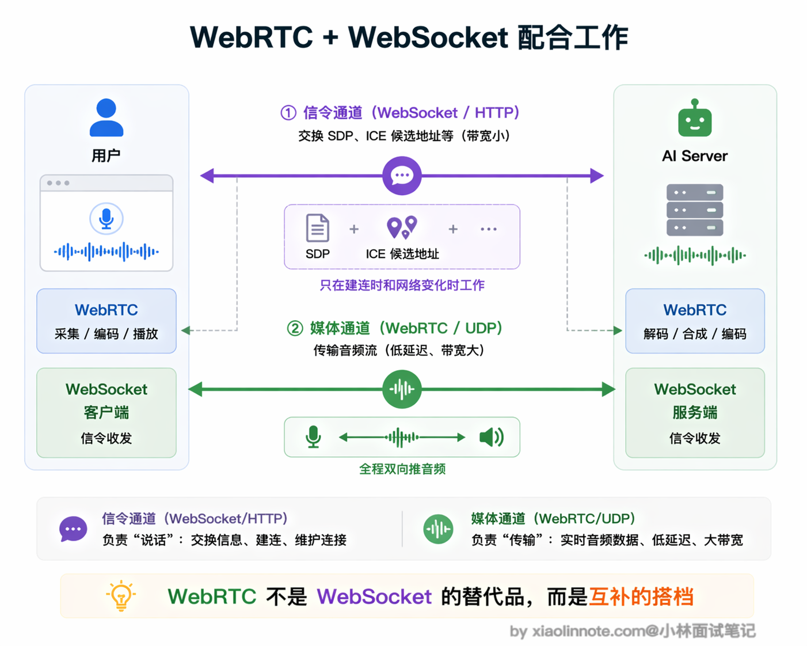
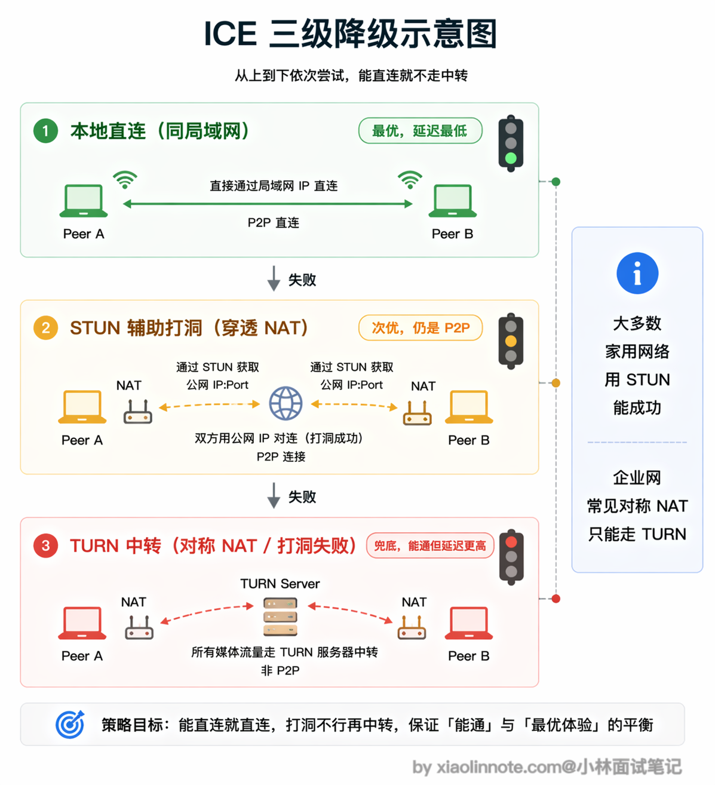
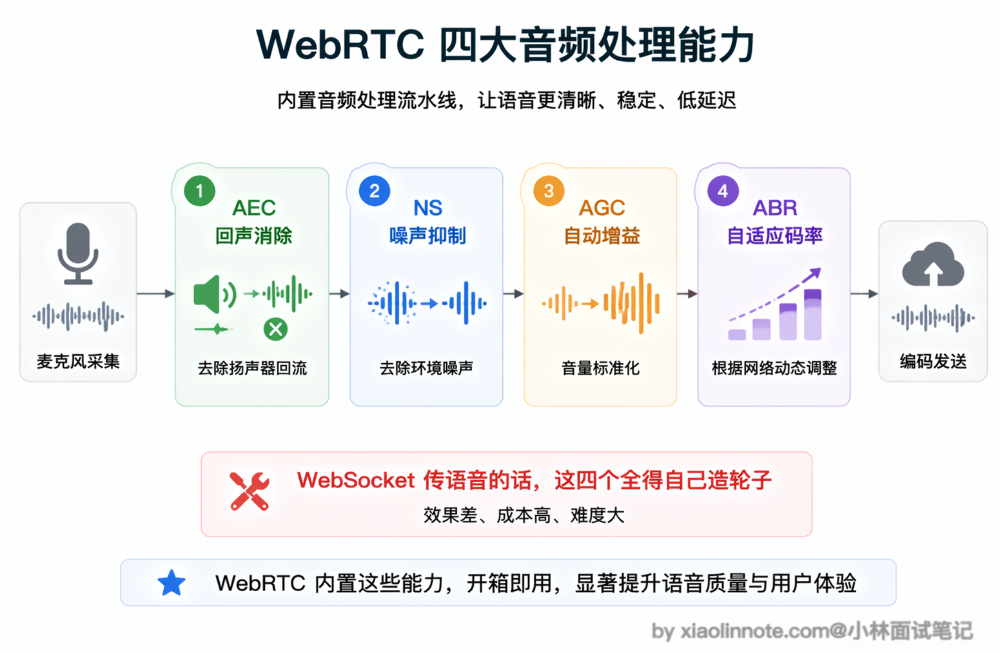
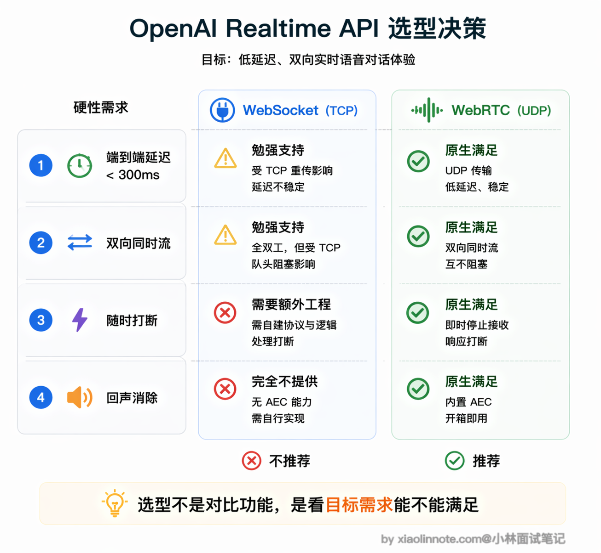

为什么要用 WebRTC 协议？它和 WebSocket（WS）在 AI 对话流中的核心差异是什么？
👔面试官：为什么 AI 实时语音要用 WebRTC？它和 WebSocket 在 AI 对话流中的核心差异是什么？
🙋♂️我：WebRTC 主要面向实时媒体，能够在合适的网络条件下建立点对点路径，并配套处理媒体时序、拥塞和丢包；WebSocket 是可靠的 TCP 消息通道，通常经过服务端，但也能承载音频。两者不是单纯按“谁延迟低”排序，要看媒体与控制面的需求。
👔面试官：你说的 P2P 只是 WebRTC 可能采用的一种路径，不是核心保证。关键是 WebSocket 的消息通道基于 TCP，而 WebRTC 媒体通常使用 RTP/RTCP over UDP，并通过 ICE 在必要时回退到 TCP/TLS 或 TURN 中继；它们对时序、丢包和拥塞的处理不同，你知道这意味着什么吗？
🙋♂️我：TCP 丢包会重传，UDP 不重传。但是 TCP 重传不是好事吗？能保证数据完整啊，语音也需要完整传输吧？
👔面试官：语音对实时性更敏感。TCP 的可靠有序字节流可能因丢包重传产生队头阻塞；实时媒体则通常允许有限丢包，并用抖动缓冲、纠错或丢包隐藏维持播放。但 WebRTC 并不等于“UDP 永不回退”，也不保证所有音频处理都由协议本身完成，需要区分媒体栈、浏览器能力和应用代码。
原来语音和文字对网络的要求完全不同，下面我就从这个根本差异出发，把 WebRTC 和 WebSocket 的核心区别讲透。
💡 简要回答
我理解核心原因是：WebSocket 提供可靠有序的 TCP 消息流，而实时媒体更关心播放时序和可控延迟；WebRTC 为媒体提供 RTP/RTCP、抖动缓冲、拥塞控制、加密和 ICE 等配套机制。它并非简单的“TCP 换 UDP”。
语音通常可以容忍少量可隐藏的丢包，却很难容忍持续增长的端到端延迟；TCP 的重传和队头阻塞可能让实时播放等待缺失数据。具体体验还受编码器、抖动缓冲、网络和设备影响。
WebRTC 的实时媒体通常优先使用 UDP 上的 RTP/RTCP，但 ICE 也可能选择 TCP/TLS 候选或 TURN 中继。接收端可结合抖动缓冲、前向纠错、选择性重传和丢包隐藏等机制处理损伤，效果与编码器、实现和网络条件有关，不能用固定延迟数字承诺。
另外，浏览器/媒体栈通常能提供回声消除（AEC）、噪声抑制（NS）、自动增益控制（AGC）和自适应发送能力，但启用方式与效果依赖平台；WebSocket 本身不提供这些媒体能力，应用需要另接采集、编码和质量控制组件。
所以，支持 WebRTC 接入的实时语音 API 往往把 WebRTC 用作媒体平面，把 WebSocket/HTTP 或其他通道用作控制和信令平面；这不是说 TCP “根本不能传语音”，而是可靠消息通道通常需要自行承担媒体时序、丢包和设备处理。
📝 详细解析
要理解为什么语音场景需要 WebRTC，得先想清楚一个问题：传输文字和传输语音，对网络的要求本质上是不同的。
传输文字时，你希望每个字符都能准确到达，顺序不能乱，丢一个字母整段话可能就不对了。所以 TCP 的可靠有序传输对文字来说是刚需，你愿意等网络重传，因为等来的是完整正确的内容。
传输语音时，时序和端到端延迟会直接影响打断、轮次切换和重叠说话。具体可接受范围取决于编码、缓冲、网络和交互设计，不宜用单一的 200ms/400ms 阈值替代测量。

在这个场景里，短时少量丢包有时可以由编码器或丢包隐藏减轻；但等待重传让播放延迟持续积累，会破坏实时交互。更准确的工程目标是“在可接受的音质、丢包和延迟之间平衡”，而不是绝对地“只要丢包不要延迟”。
WebSocket 底层是 TCP，因此一个连接内的消息按序交付，丢包可能造成队头阻塞。它仍可用于低并发、控制面或对可靠性要求高的音频上传；若用它承载实时媒体，应用必须自己设计分片、时钟、抖动、编码、丢包和背压策略。
WebRTC 的根本：选择 UDP，主动放弃可靠性
WebRTC 是一组面向实时通信的标准和实现协作，覆盖媒体轨道、RTP/RTCP、加密、ICE、数据通道等部分。它常优先使用 UDP，但 ICE 允许在受限网络中选择其他候选或 TURN 中继；因此“WebRTC = UDP”是有用的简化，却不是完整定义。
UDP 本身不提供可靠有序交付，但 WebRTC 的不同子协议和媒体实现可以在应用语义上增加反馈、纠错或选择性重传。音频媒体与 DataChannel 的可靠性选择也不同，不能把整个 WebRTC 归结为“永不重传”。
这听起来很不可靠，但对实时媒体来说，允许有限损伤可以避免所有后续内容等待。WebRTC 音频实现可能结合抖动缓冲、前向纠错、反馈重传和「丢包隐藏（Packet Loss Concealment，PLC）」等策略；PLC 不是保证“插值后人耳完全感知不到”，效果取决于编码器、丢包形态和实现。

这是一个典型的工程权衡：用偶尔轻微的音质损失，换取稳定的低延迟。对语音通话而言，这是正确的取舍。
WebRTC 不是单一协议，而是一套协议组合
你可能以为 WebRTC 就是一个协议，跟 WebSocket 一样，换个名字而已。其实不是，WebRTC 更像是一套「协议全家桶」，在 UDP 之上叠加了好几层协议，每层各管一件事，组合在一起才能完成实时音视频通信。

媒体常见的底层路径是 UDP，但最终候选也可能是 TCP/TLS 或 TURN 中继；“低延迟”来自媒体协议、拥塞控制与播放策略的组合，而不是 UDP 单独保证。
WebRTC 使用 DTLS 完成密钥协商，并通常通过 DTLS-SRTP 保护 RTP 媒体；DataChannel 则有自己的 SCTP over DTLS 语义。把 DTLS 简化成“UDP 版 TLS”有助于入门，但实际组合还包括证书指纹、密钥协商和媒体加密。
加密通道建好之后，媒体数据用 SRTP（Secure RTP）传输。
RTP 是专门为实时媒体设计的协议，每个包都带时间戳和序列号，接收方可以知道包的时序和是否有丢失，配合 RTCP 做传输质量的监控和反馈。你可以把 RTP 理解成「给每个音频包贴了标签」，接收方根据标签知道这个包应该排在哪里、前面有没有包丢了。
在连接建立阶段，WebRTC 使用 ICE（Interactive Connectivity Establishment）框架来处理 NAT 穿透，这是实际部署中最复杂的部分，后面单独解释。

SDP 信令：WebRTC 握手的「协商书」
WebRTC 建立连接前，双方需要互相告知对方自己的能力：支持哪些音视频编解码格式、网络地址是什么、加密参数是什么。这个协商过程通过 SDP（Session Description Protocol）来完成。
SDP 本身只是一种格式，不规定如何传输。双方需要通过一个「信令通道」来交换 SDP，这个信令通道可以是 WebSocket、HTTP 或者任何能双向传输的方式，WebRTC 不关心。这就是为什么用 WebRTC 做 AI 语音时，还是需要一个 WebSocket 连接：WebSocket 负责信令交换（告诉对方「我的网络地址是 xxx，我支持 Opus 编解码」），真正的音频流走 WebRTC 的 UDP 通道。两者各司其职，不是替代关系。

NAT 穿透：ICE/STUN/TURN 解决的问题
现实中大多数用户都在路由器后面，没有公网 IP，直接用内网地址互相连接是行不通的。WebRTC 用 ICE 框架来解决这个问题，ICE 会按优先级依次尝试三种连接方式：

ICE 会收集并连通性检查多类候选：本地候选、STUN 发现的服务器反射候选，以及 TURN 分配的中继候选。最终路径可能是直连，也可能是 TURN 中继；连通性与延迟不能只凭“家庭网络通常能打洞”来保证。
你可能会问，为什么有些情况下打洞会失败、非得走 TURN？
打洞失败可能来自对称 NAT、严格防火墙、UDP 被阻断、地址映射变化或企业网络策略等。此时可以使用 TURN 中继，但流量和带宽成本会转移到中继服务器，也不再是端到端直连。
这三层降级保证了 WebRTC 在各种网络环境下都能建立连接，只是在最差情况下退化成类似 WebSocket 经过服务器中转的模式。
WebRTC 内置的音频处理能力
WebRTC 不只是一个传输协议，而是一套媒体、加密、连通性和设备能力的组合。浏览器媒体栈常提供 AEC、NS、AGC、编码和拥塞控制等能力，但具体开关、效果和平台支持需要实测；WebSocket 不会自动提供这些能力。

回声消除（AEC）是其中最重要的一个。当你用扬声器外放 AI 的声音时，麦克风会同时把这段声音采集进去，如果不做处理，AI 就会听到自己说话的回声，形成反馈循环。WebRTC 内置了多年优化的回声消除算法，能实时识别并消除这部分回声，让对话不产生干扰。
噪声抑制（NS）解决环境噪声问题，比如用户在嘈杂的咖啡厅说话，WebRTC 会自动把背景噪声过滤掉，只传人声。自动增益控制（AGC）解决音量不稳定的问题，说话声音太小时自动放大，太大时自动降低，保证对方听到稳定的音量。
最后是基于反馈的拥塞和发送控制：实现可以根据 RTCP 反馈、丢包、往返时间和可用带宽调整发送策略。它不能保证网络波动时永不卡顿，生产系统仍需监控 jitter、RTT、丢包、音频能量和用户打断成功率。
实时语音 API 选择 WebRTC 的决策逻辑
以支持 WebRTC 接入的实时语音 API 为例：用户说话时服务端持续接收媒体，模型输出也持续返回，交互需要支持双向流动和打断。具体产品的协议、事件和鉴权方式以其当前文档为准。
这个场景对技术方案的要求包括可测量的端到端延迟、双向媒体、可靠的打断语义、回声控制、鉴权和降级路径。延迟预算应拆成采集、编码、上行、排队、模型首包、下行、播放缓冲等阶段，而不是套用一个固定阈值。
把这些要求综合起来看，WebSocket 可以承担控制、事件或可靠音频片段传输，但实时媒体能力需要应用自行补齐；WebRTC 为媒体提供了更完整的协议栈和浏览器集成。最终选型仍应根据 API 支持、网络可达性、TURN 成本和服务端运维能力验证。

WebSocket 和 WebRTC 的核心差异总结
| 维度 | WebSocket | WebRTC |
|---|---|---|
| 传输/媒体语义 | TCP 可靠有序消息流 | RTP/RTCP 媒体路径常优先 UDP，也可经 ICE/TURN 使用其他路径 |
| 连接模式 | 通常客户端到服务端 | 可直连，也可经 TURN 中继；不保证 P2P |
| 延迟 | 受排队、重传、服务端处理和网络影响 | 受编码、抖动缓冲、拥塞、网络路径和服务端处理影响 |
| 丢包处理 | TCP 负责可靠有序交付，可能出现队头阻塞 | 媒体实现可结合反馈、纠错、重传和 PLC，策略可配置/实现相关 |
| 音视频支持 | 仅提供消息传输，需自行处理采集、编码和媒体时序 | 浏览器/媒体栈通常提供较完整的采集、编解码和实时控制能力，但效果依赖平台 |
| 连接建立 | 简单，HTTP Upgrade 即可 | 复杂，需要信令交换 + ICE NAT 穿透 |
| 适合场景 | 文字/数据实时双向通信 | 实时音视频通话 |
| 实现复杂度 | 低 | 高（信令服务器、STUN/TURN 服务器都要自建或使用云服务） |
选型原则是：先区分媒体平面与信令/控制平面。文字增量可用 HTTP 流或 WebSocket；实时语音可优先评估 WebRTC，但要把信令、ICE、TURN、鉴权、录音合规和降级方案纳入总成本。WebRTC 复杂度真实存在，直连也不保证，不能把“低延迟”当成未经测量的承诺。
🎯 面试总结
回到开头踩的雷，最大的误区是觉得 WebSocket 和 WebRTC「都能传语音，差别不大」。
面试回答这道题，第一个核心点是抽象层不同：WebSocket 是可靠有序的 TCP 消息通道；WebRTC 是包含媒体、加密、ICE 和实时反馈的一组能力，媒体路径通常使用 RTP/RTCP 并优先 UDP，但可能回退或走 TURN。实时语音更重视时序和延迟预算，因此会在可接受音质、丢包与延迟之间做权衡。
第二个要点是媒体工程边界。浏览器/媒体栈常提供 AEC、NS、AGC、编解码、抖动和拥塞控制，但这些不是 WebSocket 协议提供的，也不是所有平台效果一致；用 WebSocket 做实时媒体需要自行组合这些能力。
第三个加分点是连接建立机制：应用通过任意可用信令通道交换 SDP/候选，ICE 使用 STUN/TURN 完成连通性检查，媒体再走选中的安全路径。WebSocket 可以做信令，但不是必需品；它与 WebRTC 是“控制面配合媒体面”的关系，而不是二选一。